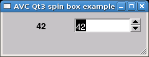

Current: 0.6.0
Released:10-Jun-2008
License: GPL
Common Requirements:
python 2.2 - 2.5
GTK+ requirements:
Pygtk 2.8 - 2.10
Qt requirements:
Pyqt v3 - v4
Tk requirements:
Tkinter 2.4
wxWidgets requirements:
wxPython 2.6 - 2.8
Author: Fabrizio Pollastri
Quick start examples:
GTK+,
Qt3,
Qt4,
Tk,
wxWidgets.
User Manual
Source:
- current avc-0.6.0.tar.gz
- all sources
Debian package:
- python-avc
Quick start examples:
- GTK+ spinbutton +
glade file
- Qt3 spinbox +
ui file
- Qt4 spinbox +
ui file
- Tk spinbox +
tcl file
- wx spincontrol +
xrc file

01: #!/usr/bin/python 02: # .+ 03: # 04: # .identifier : $Id:$ 05: # .context : Application View Controller 06: # .title : A spin box replicated into a text label (Qt3) 07: # .kind : python source 08: # .author : Fabrizio Pollastri 09: # .site : Revello - Italy 10: # .creation : 17-Nov-2006 11: # .copyright : (c) 2006 Fabrizio Pollastri. 12: # .license : GNU General Public License (see below) 13: # 14: # This file is part of "AVC, Application View Controller". 15: # 16: # AVC is free software; you can redistribute it and/or modify 17: # it under the terms of the GNU General Public License as published by 18: # the Free Software Foundation; either version 3 of the License, or 19: # (at your option) any later version. 20: # 21: # AVC is distributed in the hope that it will be useful, 22: # but WITHOUT ANY WARRANTY; without even the implied warranty of 23: # MERCHANTABILITY or FITNESS FOR A PARTICULAR PURPOSE. See the 24: # GNU General Public License for more details. 25: # 26: # You should have received a copy of the GNU General Public License 27: # along with this program. If not, see <http://www.gnu.org/licenses/>. 28: # 29: # .- 30: 31: 32: from qt import * # Qt interface 33: from qtui import * # ui files realizer 34: import sys # system support 35: 36: from avc import * # AVC 37: 38: UI_FILE = 'qt3_spinbox.ui' # qt ui descriptor 39: 40: 41: class Example(QApplication,AVC): 42: """ 43: A spin box whose value is replicated into a text label 44: """ 45: 46: def __init__(self): 47: 48: # create GUI 49: QApplication.__init__(self,sys.argv) 50: self.root = QWidgetFactory.create(UI_FILE) 51: self.setMainWidget(self.root) 52: self.root.show() 53: 54: # the variable holding the spinbox value 55: self.spin_value = 0 56: 57: 58: #### MAIN 59: 60: example = Example() # instantiate the application 61: example.avc_init() # connect widgets with variables 62: example.exec_loop() # run Qt event loop until quit 63: 64: #### END
01: #!/usr/bin/python
02: # .+
03: #
04: # .identifier : $Id:$
05: # .context : Application View Controller
06: # .title : A spin box replicated into a text label (Qt3)
07: # .kind : python source
08: # .author : Fabrizio Pollastri
09: # .site : Revello - Italy
10: # .creation : 9-Jan-2008
11: # .copyright : (c) 2008 Fabrizio Pollastri.
12: # .license : GNU General Public License (see below)
13: #
14: # This file is part of "AVC, Application View Controller".
15: #
16: # AVC is free software; you can redistribute it and/or modify
17: # it under the terms of the GNU General Public License as published by
18: # the Free Software Foundation; either version 3 of the License, or
19: # (at your option) any later version.
20: #
21: # AVC is distributed in the hope that it will be useful,
22: # but WITHOUT ANY WARRANTY; without even the implied warranty of
23: # MERCHANTABILITY or FITNESS FOR A PARTICULAR PURPOSE. See the
24: # GNU General Public License for more details.
25: #
26: # You should have received a copy of the GNU General Public License
27: # along with this program. If not, see <http://www.gnu.org/licenses/>.
28: #
29: # .-
30:
31:
32: from qt import * # Qt interface
33: import sys # system support
34:
35: from avc import * # AVC
36:
37:
38: class Example(QApplication,AVC):
39: """
40: A spin box whose value is replicated into a text label
41: """
42:
43: def __init__(self):
44:
45: ## create GUI
46:
47: # main window
48: QApplication.__init__(self,sys.argv)
49:
50: # horizontal layout for widgets inside main window
51: self.hbox = QHBox()
52: self.hbox.setCaption('AVC Qt3 spin box example')
53: self.hbox.resize(280,70)
54: self.setMainWidget(self.hbox)
55:
56: # label replicating the spin box value with formatting string
57: self.label = QLabel(self.hbox)
58: self.label.setName('spin_value__label')
59: self.label.setText('<b>%d</b>')
60:
61: # spin box
62: self.spinbox = QSpinBox(0,100,1,self.hbox)
63: self.spinbox.setName('spin_value__spinbox')
64:
65: # show all widgets
66: self.hbox.show()
67:
68:
69: # the variable holding the spin box value
70: self.spin_value = 0
71:
72:
73: #### MAIN
74:
75: example = Example() # instantiate the application
76: example.avc_init() # connect widgets with variables
77: example.exec_loop() # run Qt event loop until quit
78:
79: #### END